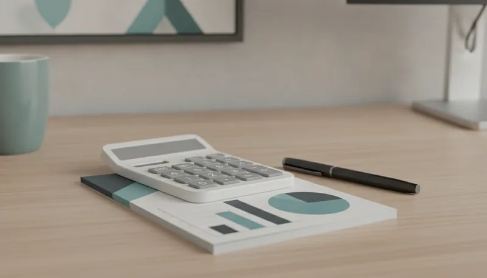

2026년 귀속 연말정산 미리보기와 12월 31일 전 체크리스트
10월 말이 지나가면서 한 해 동안의 소득과 지출 내역을 돌아보며 미리 연말정산을 준비해야 하는 시기가 되었습니다. 내년 1월에서 2월 사이에 진행하는 연말정산은 2026년 1월 1일부터 12월 31일까지 발생한 근로소득과 소비 지출을 정산하는 2026년 귀속분입니다. 이미 지나간 2025년 귀속 정산과 다르게 올해 귀속분은 12월 31일이 지나가기 전에 결제 수단을 변경하거나 금융상품에 추가 금액을 납입하는 방법으로 최종 환급 결과를 크게 바꿀 수 있습니다. 국세청과 기획재정부의 현행 세법 기준(2026년 10월 기준)을 바탕으로 남은 기간 점검해야 하는 소득공제 및 세액공제 핵심 항목을 세밀하게 풀어 정리했습니다.

2026년 귀속 연말정산이 갖는 의미와 준비 타이밍
연말정산의 귀속 연도는 소득이 실제로 발생한 해를 기준으로 정해집니다. 이번에 준비하는 연말정산은 2026년 한 해 동안 수령한 급여와 지출한 금액 전체를 정산 대상으로 삼습니다. 2026년 초에 이미 마쳤던 연말정산은 2025년 소득에 대한 정산이었으므로 개념상 착오가 없어야 합니다.
올해 12월 31일까지 실행하는 모든 소비 지출과 금융 계좌 납입 금액이 이번 정산의 환급액을 결정짓는 기준이 됩니다. 세법 기준은 매년 일부 개정되거나 공제 한도가 세부 조정될 수 있으므로 2026년 10월 기준의 안내를 바탕으로 차근차근 준비해야 합니다. 개시 직전에 나오는 공식 안내문에서 세부 항목을 정밀하게 점검하는 과정이 꼭 필요합니다.
남은 두 달 동안 빠르게 챙겨야 할 핵심은 카드 사용 비율 점검과 연금저축 및 IRP 납입, 월세 세액공제 서류 요건 확인, 간소화 서비스에서 빠지기 쉬운 영수증 사전 확보입니다. 최종 공제 금액은 국세청 시스템에서 꼭 재확인하는 것이 안전합니다.
연말정산 미리보기 서비스 활용법과 확인 순서
국세청은 매년 가을 시점(보통 11월 전후)에 홈택스 사이트를 통해 연말정산 미리보기 서비스를 개시합니다. 정확한 서비스 개통일은 국세청의 공식 공지사항을 확인하면 됩니다. 이 프로그램은 올해 1월부터 9월까지의 실제 신용카드·체크카드 사용액 및 지출 내역에 10월 이후의 예상 사용액을 더해서 미리 예상 소득세액을 계산해 주는 시뮬레이션 서비스입니다.
국세청 홈택스나 모바일 손택스 앱에 접속해서 올해 예상 급여와 남은 기간의 지출 계획을 입력하면 현재까지의 공제 충족률을 바로 조회해볼 수 있습니다. 1월부터 9월까지의 사용 기록을 바탕으로 남은 기간에 어떤 결제 수단을 집중적으로 활용할지, 연금 계좌에 얼마를 더 넣어야 세금을 아낄 수 있을지 판단하는 명확한 기준점이 되어줍니다.
미리보기 화면을 열었을 때 가장 먼저 확인해야 하는 항목은 소득공제 금액이 아니라 본인의 총급여액입니다. 총급여 수치가 실제와 다르게 입력되어 있으면 그 위에 계산되는 모든 공제 추정치가 줄줄이 틀어지게 됩니다. 기준이 되는 급여 숫자를 바르게 맞춘 다음 아래의 공제 항목을 하나씩 살펴보아야 정확한 시뮬레이션이 가능합니다.
신용카드와 체크카드 결제 수단 분범 사용법
카드 소득공제를 받기 위한 기본 전제 조건은 연간 카드 총 사용금액이 근로자 총급여의 25%를 초과해야 한다는 점입니다. 예를 들어 총급여가 5,000만 원인 근로자라면 연간 1,250만 원 이상을 카드로 결제했을 때 비로소 25% 초과분에 대해 공제가 시작됩니다.
연간 지출액이 25% 문턱을 넘어서기 전까지는 할인 혜택이나 포인트 적립률이 높은 신용카드를 사용하는 편이 유리합니다. 하지만 이미 25% 한도를 넘긴 상태라면 공제율이 더 높은 결제 수단으로 바꿔서 결제하는 편이 절세에 훨씬 도움 됩니다. 신용카드의 소득공제율은 15%에 불과하지만 체크카드와 현금영수증은 30%의 공제율이 적용되기 때문입니다.
공제율 계산을 소홀히 해서 연말까지 신용카드만 계속 사용하다가 30% 공제율이 적용되는 체크카드 혜택을 놓치는 경우가 흔히 발생합니다. 미리보기 서비스로 25% 달성 여부를 미리 조회해 두고 결제 수단을 변경하는 행동이 필요합니다. 전통시장 사용분이나 대중교통 이용액 등은 별도의 높은 공제율과 한도가 적용되므로 남은 기간 결제 수단을 철저히 구분해서 사용하는 전략이 효과적입니다.

연금저축과 IRP 세액공제 한도 채우기
연금저축과 개인형 퇴직연금(IRP)은 연말에 한꺼번에 일시 납입하더라도 세액공제 혜택을 똑같이 적용받을 수 있어서 대표적인 절세 수단으로 꼽힙니다. 2026년 10월 소득세법 기준 연금저축의 세액공제 대상 납입 한도는 연 600만 원이며, IRP를 합산한 연금계좌 전체 한도는 연간 최대 900만 원입니다.
총급여 5,500만 원(종합소득금액 4,500만 원) 이하인 근로자는 지방소득세를 포함해서 16.5%의 세액공제율을 적용받습니다. 이 구간에 속한 근로자가 한도인 900만 원을 모두 채워서 납입하면 148만 5,000원의 세액을 환급받게 됩니다. 반면 총급여 5,500만 원을 초과하는 경우에는 13.2%의 공제율이 적용되어 최대 118만 8,000원의 세액공제 혜택을 받습니다.
금융기관에 따라 연말 계좌 입금 마감 시각이 12월 31일 영업 종료 시간으로 제한되거나 인프라 점검으로 일찍 닫히는 경우가 있습니다. 마감일에 임박해서 입금하려다가 시스템 장애나 처리 시간 지연으로 납입이 실패하는 시행착오를 겪을 수 있으니 연말 마지막 날보다 2–3일 정도 여유를 두고 미리 납입을 완료해야 안전합니다.
월세 세액공제 요건과 증빙 서류 삼박자
월세 세액공제는 무주택 세대의 세대주 또는 세대원으로서 총급여 8,000만 원 이하인 근로자가 대상입니다. 공제 한도는 연간 1,000만 원이며 총급여액 크기에 따라 15% 또는 17%의 세액공제율이 차등 적용됩니다.
이 공제를 문제없이 적용받으려면 세 가지 기본 정보가 완벽히 일치해야 합니다. 첫째는 임대차계약서상의 주소지이고, 둘째는 주민등록표 등본상의 주소지이며, 셋째는 실제 월세를 임대인에게 송금한 계좌 내역입니다. 이 삼박자 조건 중 하나라도 빠지면 공제 대상에서 제외됩니다.
실제로 이사를 하고 나서 바쁜 일정 때문에 주민등록 주소 이전을 미루다가 12월 31일을 넘겨버리면 해당 연도 월세 전체에 대해 공제를 받지 못하는 일 안타까운 상황이 생기기 쉽습니다. 연말이 지나가기 전에 임대차계약서 주소지와 주민등록상 주소지가 동일한지 주소지 관할 주민센터나 정부24를 통해 확인하고 전입신고를 마쳐야 합니다. 만약 계좌 이체 방식이 아니라 현금으로 월세를 지급했다면 임대인에게 현금영수증 발급을 요청하거나 국세청에 주택임차료 현금영수증 신고를 해두어야 증빙으로 인정받습니다.
간소화 서비스 누락 항목과 필수 영수증 챙기기
내년 1월 중순에 열리는 국세청 연말정산 간소화 서비스에서 대부분의 지출 내역이 자동으로 수집되지만, 특정 항목들은 연말이 지나기 전에 영수증을 직접 발급받아 두어야만 공제를 챙길 수 있습니다. 대표적으로 안경 및 콘택트렌즈 구입비, 보청기나 장애인 보조구 구입비가 자동으로 잡히지 않는 경우가 많습니다.
의료비는 아니지만 교육비 공제 대상에 해당하는 어린이집·유치원 특별활동비나 취학 전 자녀의 학원비도 간소화 서비스에서 빠지기 쉬우므로 미리 해당 기관에서 영수증을 따로 발급받아야 합니다. 안경 및 콘택트렌즈 구매비는 근로자 본인 및 기본공제 대상자 1인당 연 50만 원까지 의료비 공제 대상에 포함되는 항목입니다.
기부금 역시 기부 단체에서 국세청으로 내역을 자동 제출하지 않는 경우가 종종 발생합니다. 12월 31일 이전에 본인이 기부한 곳이 정식 인가를 받은 기부금 단체인지 미리 확인하고, 기부금 영수증이 국세청으로 정상 제출되는지 단체 측에 확인해 두는 과정이 빠짐없이 진행되어야 합니다.
맞벌이 부부의 인적공제와 지출 공제 분산 전략
맞벌이 부부 연말정산의 핵심은 각자의 결정세액을 먼저 정확히 확인한 뒤 인적공제와 각종 소득공제 항목을 적절히 배분하는 일입니다. 소득세는 소득이 높아질수록 높은 세율이 적용되는 누진세율 구조를 취하고 있으므로 기본적으로 소득이 더 높은 배우자 쪽으로 인적공제와 소비 지출을 모아주는 것이 과세표준 구간을 낮추는 데 효과적입니다.
그러나 한쪽 배우자의 소득이 높다고 해서 무조건 다 모아주는 것이 정답은 아닙니다. 이미 다른 공제 항목이 많아서 한쪽 배우자의 결정세액이 0원에 가까워졌다면 추가로 공제를 몰아주더라도 혜택이 그대로 소멸해 버립니다. 부부 중 한쪽의 결정세액이 모두 소진된 상태라면 남은 공제 항목을 다른 배우자 쪽으로 분산시켜 적용하는 작업이 필요합니다.

의료비 공제의 경우 근로자 총급여의 3%를 초과하는 금액부터 비로소 공제가 시작됩니다. 이런 특성 때문에 소득이 상대적으로 적은 배우자에게 의료비 지출을 몰아주는 것이 3% 문턱을 훨씬 쉽게 넘어서서 공제 혜택을 더 크게 받는 결과로 이어지기도 합니다.